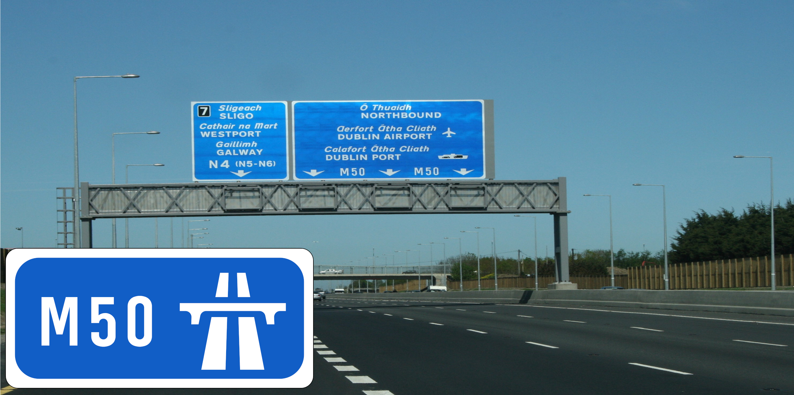
Is what I would say if someone asked me.
Now, now, now, I know what you're thinking. Traffic on the  isn't that bad right? RIGHT?
isn't that bad right? RIGHT?
Well the  is historically the busiest motorway in the all of Ireland! Why? Because it's in Dublin!
is historically the busiest motorway in the all of Ireland! Why? Because it's in Dublin!
An orbital road for Dublin was first proposed at the Dublin Transportation Study of 1971, then the first section's construction started on the Western Parkway (Junction 6 to Junction 11) and officially opened to the public in 1990. Followed 6 years later, the Northern Cross Route (Junction 6 to Junction 3) at 1996. 5 Years later, the Southern Cross Route (Junction 11 to Junction 13) opened at 2001. And the Southern Eastern Motorway (Junction 13 to Junction 17) just 4 years later in 2005! 1 year later at 2006, the  was extended to follow parts of the Airport Motorway (from
was extended to follow parts of the Airport Motorway (from  Junction 2 to
Junction 2 to  Junction 2) with the newly built Dublin Port Tunnel with, very sadly, another toll :( But one big problem arose. Traffic was BAD. So the same year (2006), more lanes were added to the
Junction 2) with the newly built Dublin Port Tunnel with, very sadly, another toll :( But one big problem arose. Traffic was BAD. So the same year (2006), more lanes were added to the  between Junction 3 and Junction 13. And many of the roundabouts in the junctions were replaced with free-flowing interchanges.
between Junction 3 and Junction 13. And many of the roundabouts in the junctions were replaced with free-flowing interchanges.
Hold on! Where is Junction 8??? Well originally it would have been an easy way to get to Naas. But that was replaced by the  dual-carriageway, and the goverment being a bit lazy in fixing the junction numbers, there is no Junction 8.
dual-carriageway, and the goverment being a bit lazy in fixing the junction numbers, there is no Junction 8.
From Junction 17 to 1

Dunleary, City Centre  |
||
| Cherrywood | ||
| Cornelscourt 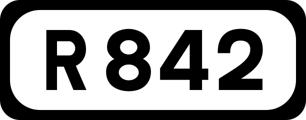 |
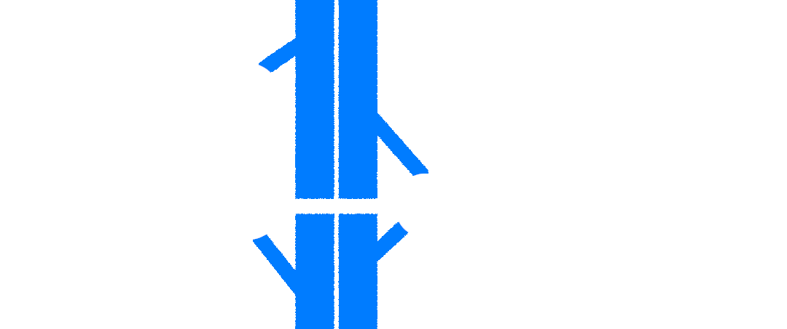 |
Kilt Ernan Ballyyogan |
| Dunleary | Stepaside | |
| Sandyford 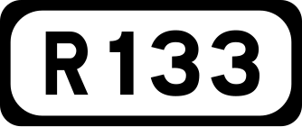 Dundrum Rathfarnham |
 |
Stepaside |
| Scholarstown | Ballycullen | |
| Templeogue | 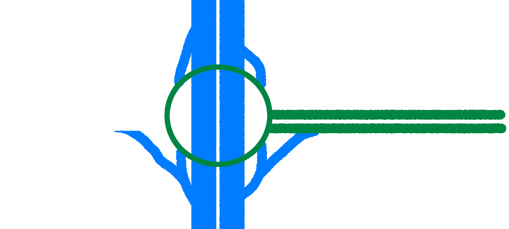 |
Blessington |
| Ballymount |  |
Cookstown |
City Centre  |
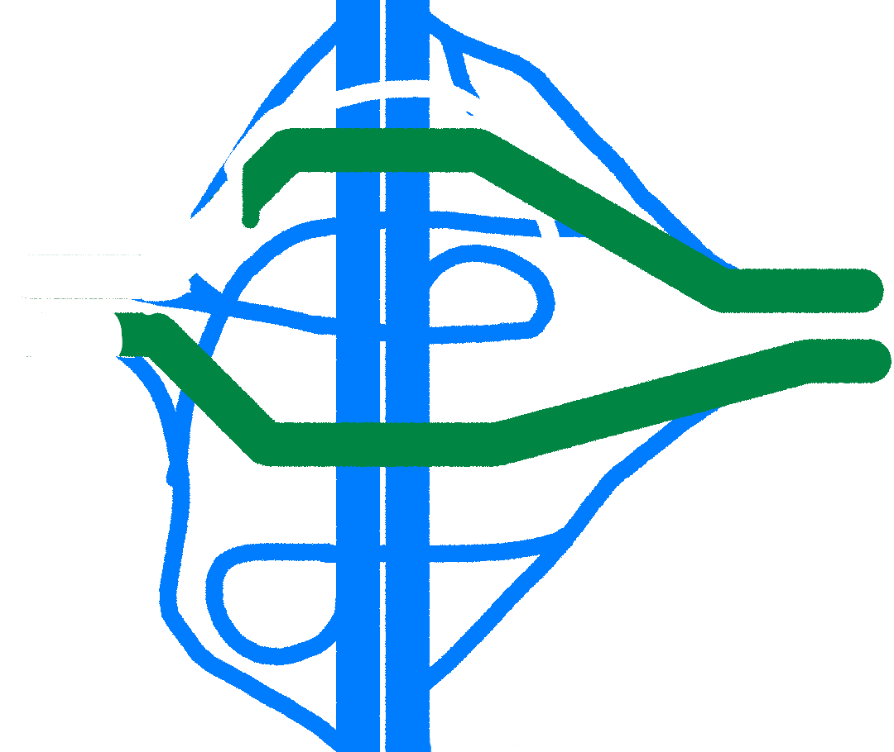 |
Limerick (Cork (Waterford |
City Centre  |
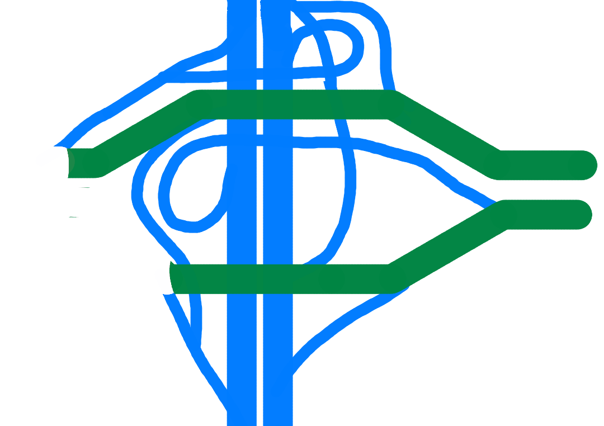 |
Sligo  (Westport 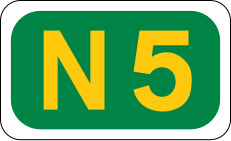 )(Galway |
City Centre  New River Road |
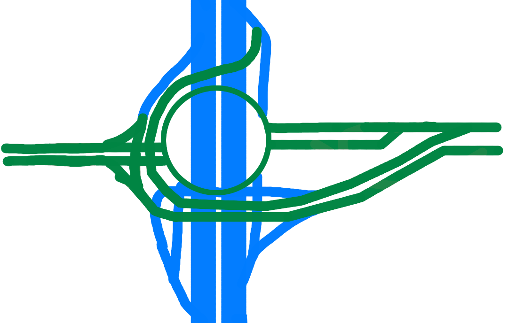 |
Blanchardstown Cavan Blanchardstown Hospital |
City Centre  |
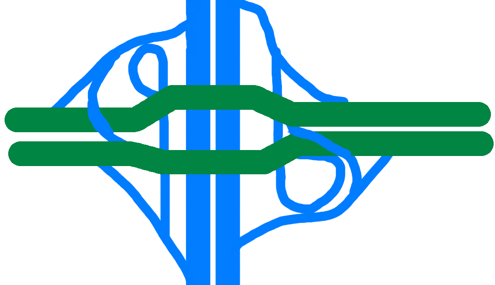 |
Derry |
| Ballymun | 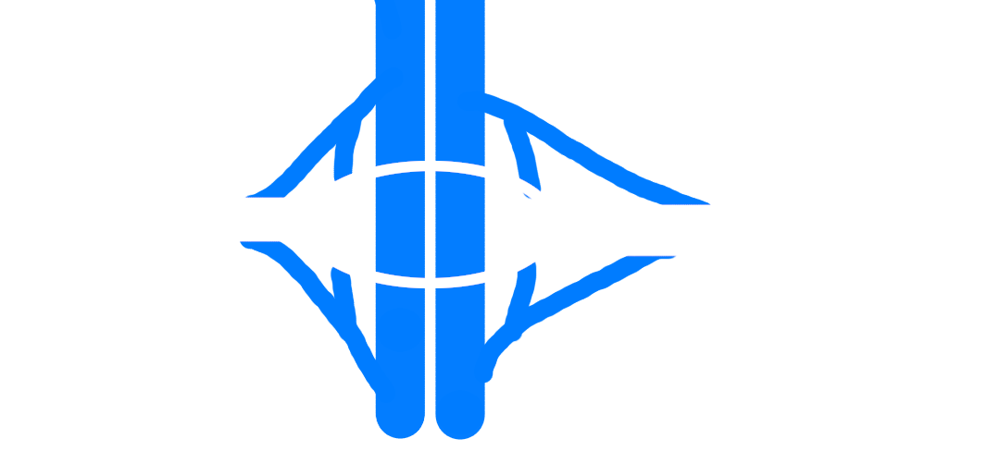 |
Naul |
 continues below.
continues below.
| continues above |
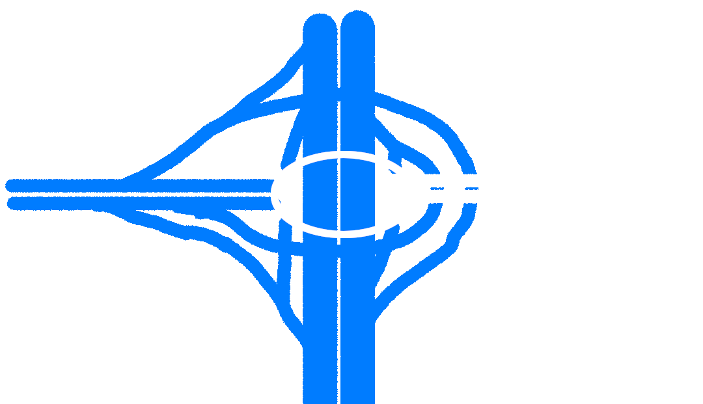 |
Malahide  |
Santry City Centre  |
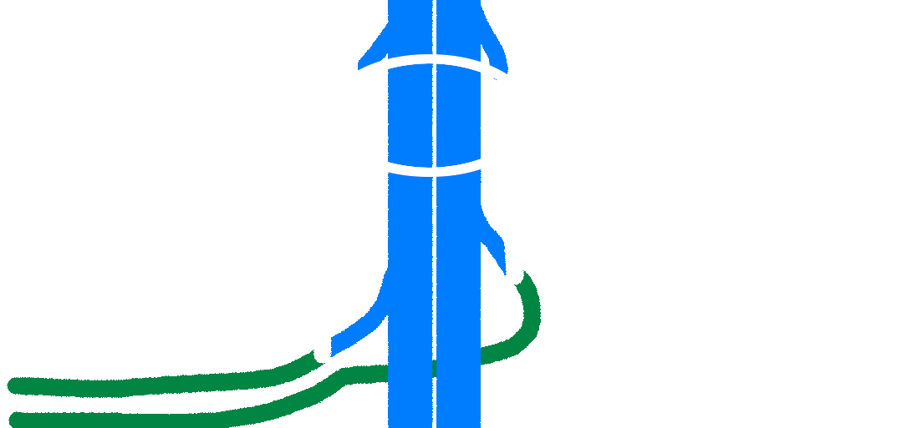 |
Coolock |
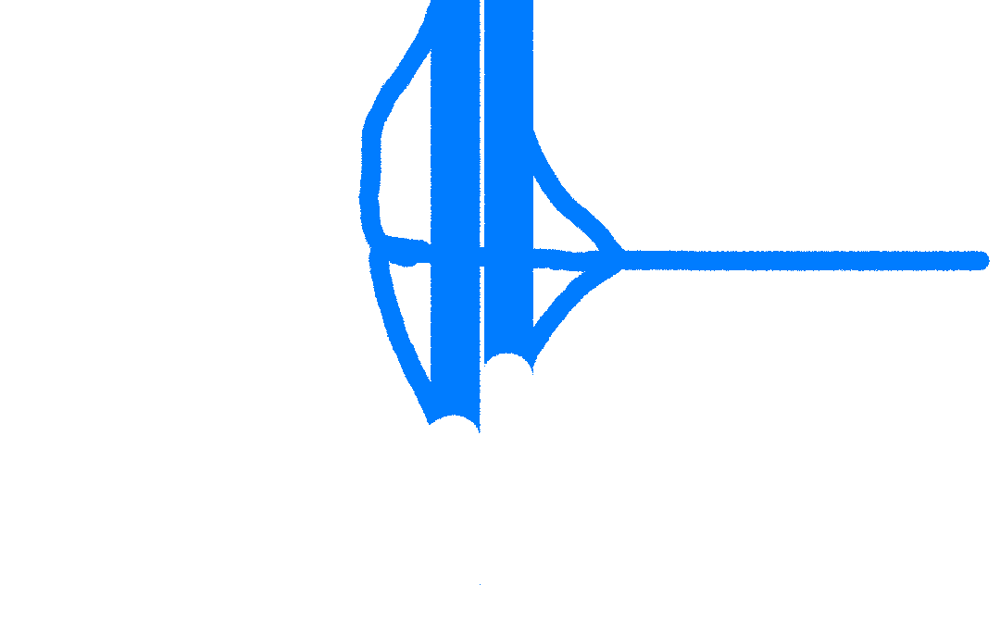 |
Dublin Port |
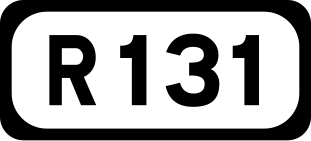